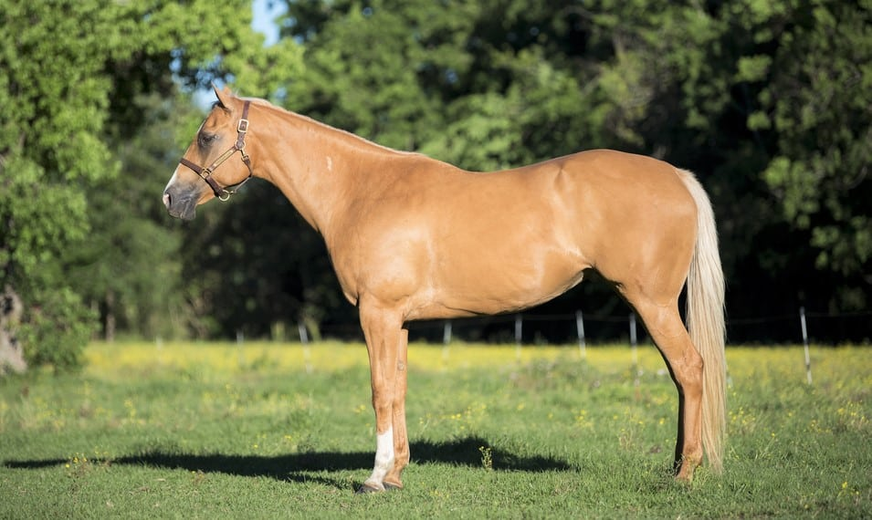
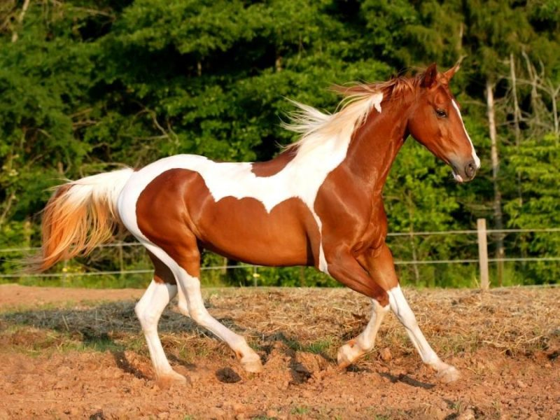
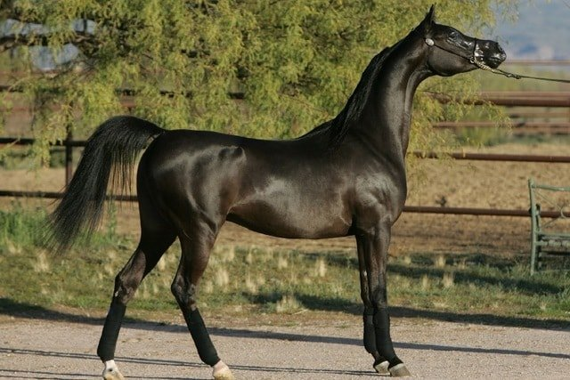

Top 5 fastest horse breeds
1.Quarter horses can run up to 55 mph

More info on Quarter Horses
2.Mustang horses can run up to 54 mph
More info on Mustang Horses
3.Thoroughbred horses can run up to 44 mph

More info on Thoroughbred Horses
4.Paint horses can run up to 40+ mph

More info on Paint Horses
5.Arabian horses can run up to 40 mph

More info on Arabian Horses